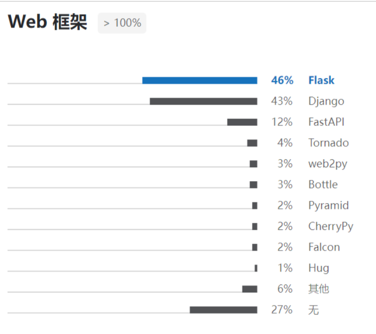
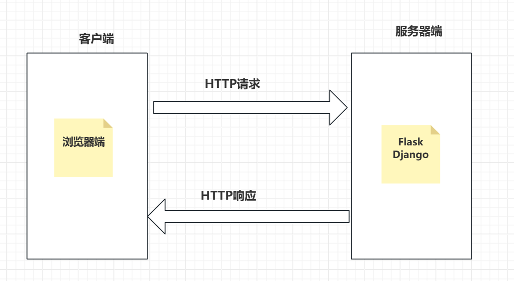
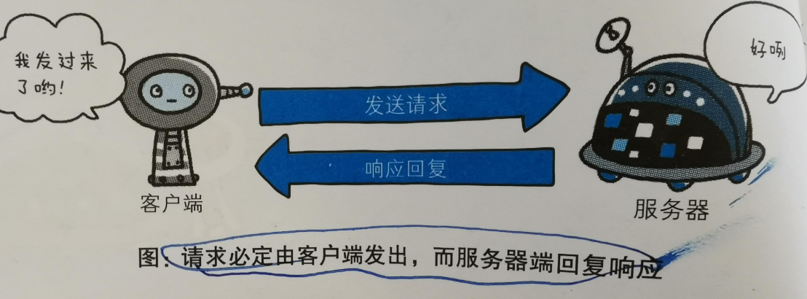
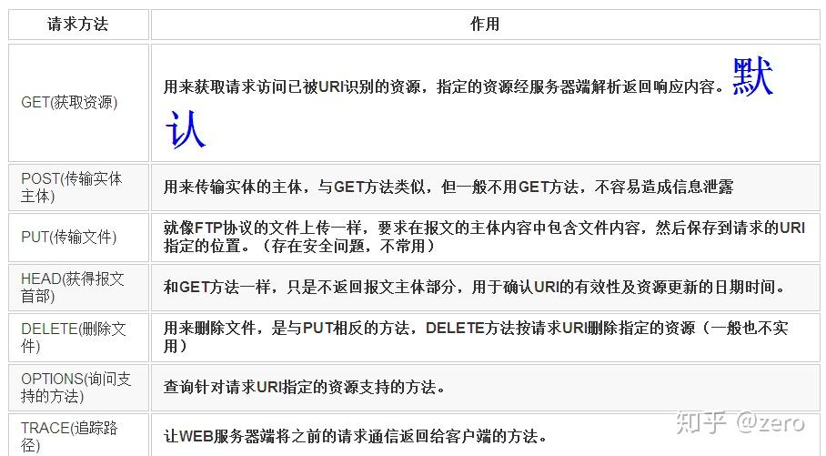
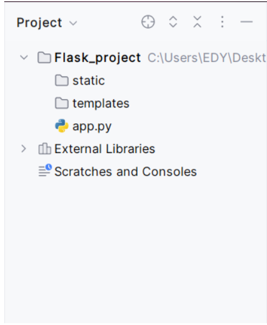
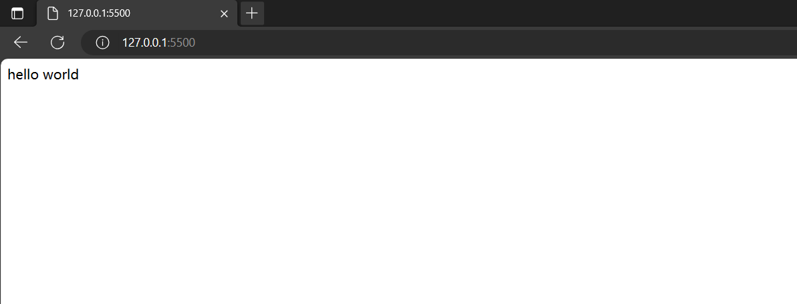
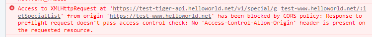

Flask是一个使用 Python 编写的轻量级 Web 应用框架。
较其他同类型框架更为灵活、轻便、安全且容易上手，方便开发人员分工合作，小型团队在短时间内就可以完成中小型网站Web服务的实现。
Flask还有很强的定制性，可以根据自己的需求来添加相应的功能，在保持核心功能简单的同时实现功能的丰富与扩展，其强大的插件库可以开发出功能强大的网站。



什么是HTTP？
HTTP：超文本传输协议
HTTP请求方法

常见的HTTP请求状态码
官方文档：https://docs.jinkan.org/docs/flask/
pip install flask==2.3.0 # 安装flask
static ：存放静态资源
templates：存放跳转页面的文件目录
app.py 主程序

from flask import Flask # 导入Flask类
app = Flask(__name__) # 实例化一个可调用的flask对象
@app.route('/') # 编写一个视图函数，通过路由可以访问到这个视图函数
def func():
return 'hello word'
if __name__ == '__main__':
app.run() # 运行
# 注意目录名称，python文件名不能是flask.py， 因为这将与 Flask 本身冲突。
访问url

关闭文件执行即可
虽然 run() 方法适用于启动本地的开发服务器，但是你每次修改代码后都要手动重启它。这样并不够优雅，而且 Flask 可以做到更好。如果你启用了调试支持，服务器会在代码修改后自动重启服务。
# 开启调试模式debug=True
# 设置端口 port=500X 默认的端口是5000，设置也从5001开始
app.run(debug=True, port=5005)
现代 Web 应用的 URL 十分优雅，为了易于辨识和记忆，flask中使用@app.route('/路由名称') 这种方式创建路由地址，如下案例：
@app.route('/')
def index():
return 'Index Page'
@app.route('/hello') # 这种方式更常用
def hello():
return 'Hello World'
# 注意事项
"""
路由名称不能重复
路由名称是从/开始可以有多个层级,例如 /wgj/login /wgj/article/add
"""
URL有很多访问方法，默认是GET 请求，有些请求是POST, PUT、DELETE请求，则可以通过route()路由中的 methods 参数可以改变请求方法，例如：
@app.route('/login_l', methods=['GET']) # 定义get请求方法
def fu():
return '欢迎来到我的程序世界'
@app.route('/login_o', methods=['POST']) # 定义post请求方法
def func():
return 'sdddd'
# 一个路由只用一种请求方法
在Flask框架中，视图函数是处理用户请求,并返回响应的函数。视图函数通常与路由一起使用，当用户访问特定的URL时，Flask会根据URL匹配到对应的视图函数来执行。视图函数可以接收HTTP请求的方法、请求参数等信息，在视图函数内部处理请求需要做的事情，最后返回。
@ap.route('/login', methods=['POST'])
def login_func(): # 函数名
u_name = request.form.get('username')
u_pwd = request.form.get('password')
return {"code": "200", "msg": "登录成功"} # 视图函数的返回值
@ap.route('/lg', methods=['GET'])
def sy_func():
u_name = request.form.get('username')
return ["code","200"]
# 注意事项
"""
视图函数的函数名不能重复
视图函数都需要有返回值，否则会报错
视图函数的名称通常遵循小写字母和下划线的组合，以便于阅读和理解。
函数体应尽量简洁，避免把复杂的逻辑代码放在一起。如果需要处理复杂的业务逻辑，可以考虑将相关代码封装成单独的函数或类然后调用。
视图函数可以返回多种类型的数据，如字符串、列表、元组、字典，json等。
"""
在falsk中 也可以使用配置模板文件的方式加载html的代码，例如：
from flask import Flask # 导入Flask类
from flask import render_template # 加载模板文件的函数
app = Flask(__name__)
@app.route('/login', methods=['GET'])
def func():
return render_template('lianxi.html') # 通过跳转函数去自动加载html文件
if __name__ == '__main__':
app.run(debug=True, port=5005)
在Flask中可以使用自身内置的 request函数 获取到浏览器/工具发送的请求参数和请求方法
from flask import Flask
from flask import render_template, request
app = Flask(__name__, static_folder='static')
@app.route('/', methods=['GET'])
def main_func():
return render_template('home_page.html')
@app.route('/login', methods=['POST'])
def login_func1():
print(request.method) # 获取请求方法
u = request.form.get('user_name') # 获取post请求的参数
p = request.form.get('pass_wd')
print('用户名:', u)
print('密码:', p)
return '登录成功'
@app.route('/login2', methods=['GET'])
def login_func2():
print(request.method) # 获取请求方法
u = request.args.get('user_name') # 获取get请求的参数
print('用户名:', u)
return 'xxxx'
@app.route('/login3', methods=['POST'])
def login_func3():
u = request.files.get('file_name') # 获取文件类型的参数
print('文件：', u)
return 'xxx'
跨域是指一个地址通过AJAX请求访问另一个不同域名下的资源时，浏览器会阻止这个请求，同时也会触发Flask的同源策略识别，并抛出跨域错误。

提示：已被CORS策略阻止，对请求的响应未通过访问控制检查，这就是没有配置相关的跨域参数，是不能访问这个接口的。
# 安装Flask-CORS库
pip install flask_cors
from flask import Flask
from flask_cors import CORS
app = Flask(__name__)
# r'/*' 是通配符，设置为允许跨域请求
CORS(app, resources=r'/*')
if __name__ == "__main__":
app.run(debug=True, port=5005)